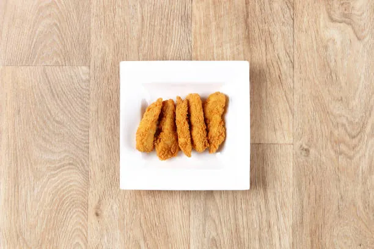

Home
Chicken strips

For your snack needs
Ingredients
- ¼ cup milk
- 1 large egg
- ½ cup all-purpose flour
- ¼ cup dry bread crumbs
- 1 tablespoon Creole seasoning
- 1 pinch ground black pepper
-
2 (5 ounce) skinless, boneless chicken breasts, sliced into strips
- ½ cup oil for frying, or as needed
How to make them
-
Mix milk and egg together in a medium bowl. Mix flour, bread crumbs,
Creole seasoning, and pepper together in a second bowl until well
combined.
-
Heat oil in a deep-fryer or large saucepan to 350 degrees F (175 degrees
C).
-
Dip chicken strips into egg wash, and then roll through flour mixture
until fully coated.
-
Fry the chicken strips in the hot oil until golden brown, no longer pink
in the centers, and juices run clear, 10 to 12 minutes per side.
- Enjoy!